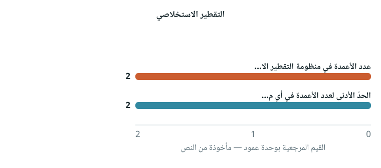

التقطير الاستخلاصي
Extractive distillation
تقطير يُضاف فيه مكوّن ثالث عالي الغليان (مُستخلِص) إلى العمود فيغيّر تطاير المكوّنين المراد فصلهما، ويُستعاد المُستخلِص في عمود ثانٍ ويُعاد تدويره.
التقطير الاستخلاصي طريقة لفصل مزيج أزيوتروبي أو مزيج ذي نقاط غليان متقاربة بإضافة مكوّن ثالث يُسمّى المُستخلِص أو المادّة الحاملة. يُغذّى المُستخلِص إلى العمود قرب قمته فيسري مع السائل إلى الأسفل، فيغيّر معاملات النشاط في الطور السائل ويرفع التطاير النسبي لأحد المكوّنين على الآخر. المكوّن الأقل تطايرًا يخرج من قاع العمود ممزوجًا بالمُستخلِص، ثم يُفصل عنه في عمود استعادة ويُعاد المُستخلِص إلى العمود الأول. الفرق الجوهري عن التقطير الأزيوتروبي أن المُستخلِص لا يشكّل أزيوتروبًا جديدًا مع المكوّنات، بل يعمل عبر تغيير السلوك الحراري للطور السائل، ولذلك يبقى في القاع ولا يظهر في الناتج العلوي. ويُختار المُستخلِص عادةً عالي الغليان وقابلًا للاستعادة بأقل طاقة، ويُقاس نجاحه بقدرته على رفع التطاير النسبي إلى قيمة تجعل الفصل ممكنًا اقتصاديًّا.
كيف تعمل الظاهرة؟
يُغذّى المُستخلِص عالي الغليان إلى العمود قرب قمته، فيسري مع السائل إلى الأسفل ويبقى في الطور السائل لأن غليانه مرتفع. وجوده يغيّر معاملات النشاط في السائل، فيرفع التطاير النسبي لأحد المكوّنين على الآخر. المكوّن الأكثر تطايرًا يخرج من القمة، ويخرج المكوّن الآخر مع المُستخلِص من القاع إلى عمود استعادة يفصلهما، ثم يُعاد المُستخلِص إلى العمود الأول في حلقة مغلقة.
العلاقة بالأرقام
تضيف العملية مكوّنًا ثالثًا واحدًا إلى المزيج، وتحتاج عمودين على الأقل: عمود الفصل الرئيسي وعمود استعادة المُستخلِص، لأن المُستخلِص لا بد أن يُستعاد ويُعاد تدويره. ويُقاس نجاح المُستخلِص بقدرته على رفع التطاير النسبي إلى قيمة تجعل الفصل ممكنًا، ويُفضّل ما يرفعه بأقل كمية تدوير وأقل حرارة في عمود الاستعادة. والطاقة الكلية تُقارن دائمًا بسلسلة الفصل البديلة لا بالعمود الأول وحده.
مفاهيم متقاربة
يختلف عن التقطير الأزيوتروبي في أن المُستخلِص لا يشكّل أزيوتروبًا جديدًا، بل يعمل عبر تعديل معاملات النشاط في الطور السائل؛ ويختلف عن الاستخلاص بالمُذيبات في أن الفصل يجري بالتقطير لا بالانتقال بين طورين سائلين؛ ويختلف عن التقطير الاعتيادي في أن التطاير النسبي ليس خاصية ثابتة للمزيج بل يُصنَع صناعةً بإضافة المكوّن الثالث.
حدود التطبيق
لا يُستخدم إلا حين يفشل التقطير الاعتيادي، أي عند أزيوتروب أو تطاير نسبي قريب من الواحد. ويكلّف طاقة في عمود الاستعادة، فقد يكون الوفر في عمود الفصل خسارة في المنظومة كاملة إذا كان المُستخلِص يحتاج حرارة كثيرة لاستعادته. ويشترط ثبات المُستخلِص حرارياً عند ظروف العمود، وخلوّه من التآكل والتسمّم الحفزي، وأن يبقى في الطور السائل لا أن يتبخّر مع الناتج العلوي.

| الكمية | القيمة | المصدر |
|---|---|---|
| عدد المكوّنات المضافة إلى المزيج في التقطير الاستخلاصي | 1 مكوّن | [2] |
| عدد الأعمدة في منظومة التقطير الاستخلاصي الأساسية | 2 عمود | [3] |
| الحدّ الأدنى لعدد الأعمدة في أي منظومة تقطير استخلاصي | 2 عمود | [3] |
المصادر
- 1 Extractive Distillation: A Review — Taylor & Francis (Separation & Purification Reviews) (2003). doi.org/10.1081/spm-120026627 · اطُّلع عليه 2026-11-28
- 2 A review of extractive distillation from an azeotropic phenomenon for dynamic control — Elsevier (Chinese Journal of Chemical Engineering) (2019). doi.org/10.1016/j.cjche.2018.08.015 · اطُّلع عليه 2026-11-28
- 3 Review of extractive distillation. Process design, operation, optimization and control — Elsevier (Chemical Engineering Research and Design) (2019). doi.org/10.1016/j.cherd.2018.09.020 · اطُّلع عليه 2026-11-28
استشهد بهذا المصطلح
الصيغتان مبنيتان من بيانات الصفحة نفسها: العنوان والتاريخ ورابط النسخة المنشورة.
التقطير الاستخلاصي — Extractive distillation. (2026). ديوان المعرفة — انفراد. https://infiradev.com/diwan/terms/term-extractive-distillation.html
@misc{term-extractive-distillation2026,
title = {التقطير الاستخلاصي},
titleaddon = {Extractive distillation},
howpublished = {{ديوان المعرفة — انفراد} — مرجع علمي عربي},
year = {2026},
url = {https://infiradev.com/diwan/terms/term-extractive-distillation.html},
urldate = {2026-11-28},
note = {مراجعة علمية: Abdullah Al-Huwaidi}
}
راجعه: Abdullah Al-Huwaidi · 2026-11-28 · آخر تحديث 2026-11-28